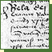

(1458–1490) and Queen Beatrix (1457–1508)
(Tyrnau, Trnava)
century
(Kismarton)

century
| The Beginnings | ||
| King Béla IV’s (1235–1270) Charter of Privileges |  | 1251 |
| The Jews of Buda greet King Matthias I (1458–1490) and Queen Beatrix (1457–1508) |
1476 | |
| The blood libel in Nagyszombat (Tyrnau, Trnava) |
1494 | |
| Jews and Turks defending Buda together | 1541 | |
| The return of the Jews in the 18th century | 18th century |
|
| Street in the ghetto in Eisenstadt (Kismarton) |
|
18th century |